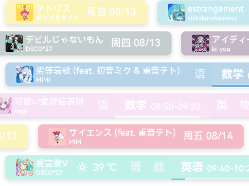
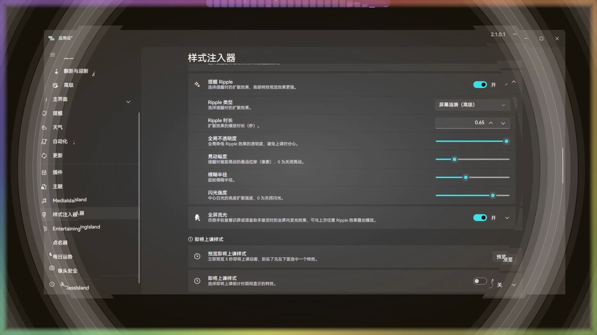
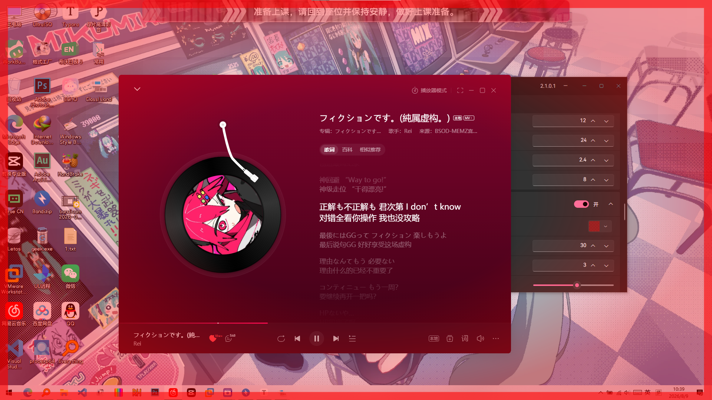
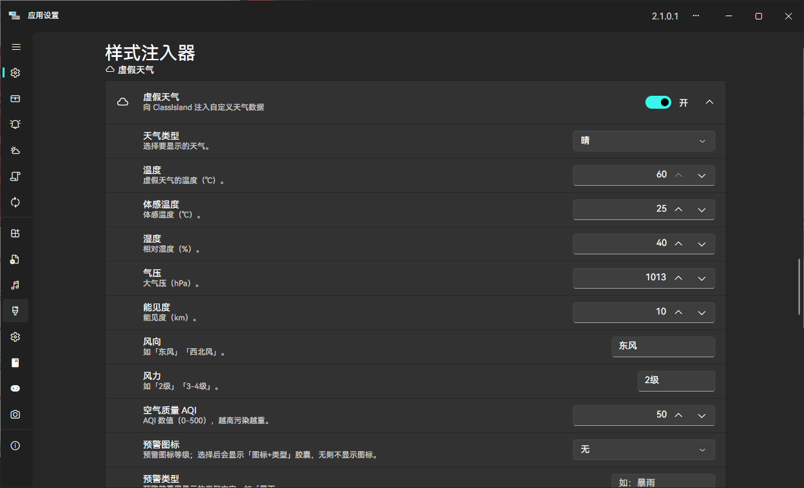
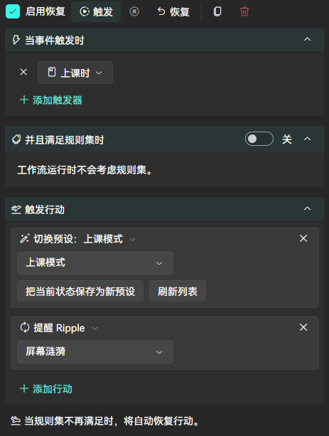
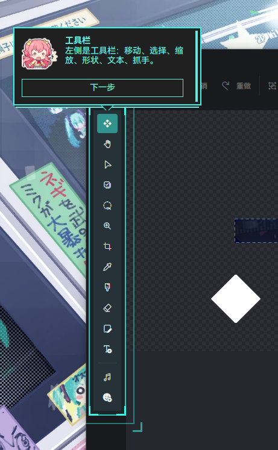

不知有多少次，我上课抬头盯着希沃上的ClassIsland，盼望着早点下课。ClassIsland是一个每个同学都会看到的“岛”，那为什么不让它更好看一点呢？
于是，我在基本上不了解Avalonia的情况下，用AI做了一个基于运行时注入的ClassIsland插件，正式版已经发布，可以去GitHub下载（暂时还未上架ClassIsland商店）
它能做什么
换皮肤
- 背景：纯色、渐变色随便换，还能叠纹理，甚至还有动态频谱
- 背景图片：放一张本地图片当壁纸，或者让一个文件夹里的图片自动轮播，甚至可以直接用正在播放的歌的专辑封面
跟着音乐变颜色
- 播放音乐时，主界面的背景、边框、阴影会自动变为专辑封面的配色
- 动态主题色：把当前专辑的主色调应用到 ClassIsland 全局主题强调色（专辑封面显示来自 MediaIsland，取色可以独立运行）

动起来
- 持续动画：呼吸、浮动、波浪……让主界面轻轻动起来。
- 显示动画：主界面出现 / 消失时，淡入淡出、缩放或滑入滑出
- 列表翻页动画：自定义轮播容器、上课提醒横幅等列表的上翻切换动画
- 提醒特效：收到提醒时有脉冲、弹跳、抖动、闪烁等强调动画，还有线性、放射、粒子、舞萌花火、爆炸、屏幕涟漪等各种 Ripple，甚至有一个覆盖整屏的全屏流光效果
- 即将上课倒计时：快上课时，屏幕上会滑过箭头
>>、扩散光环、扫描线或光带，还可以叠加红色警告边框 - 点击特效：点击主界面时产生轻微跳跃或软边扩散圆环反馈


虚假天气
- 向 ClassIsland 注入自定义天气数据，还能报告虚假气象灾害预警

底图图层编辑器
- 在 ClassIsland 中使用像 Photoshop 一样的多图层编辑器！

一键切换方案
- 把自己调好的整套效果保存成预设
- 配合 ClassIsland 的自动化，还能按时间、课程等条件自动切换方案

不必担心不会用
- 自带教学功能，虽然剧情有点猎奇（有些我已经删了，放心食用）
